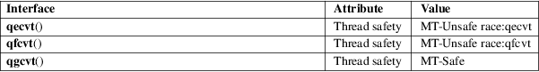

qecvt, qfcvt, qgcvt − convert a floating-point number to a string
Standard C library (libc, −lc)
#include <stdlib.h>
[[deprecated]]
char *qecvt(long double number, int
ndigits,
int *restrict decpt, int *restrict
sign);
[[deprecated]] char *qfcvt(long double number,
int ndigits,
int *restrict decpt, int *restrict
sign);
[[deprecated]] char *qgcvt(long double number,
int ndigit, char *buf);
Feature Test Macro Requirements for glibc (see feature_test_macros(7)):
qecvt(),
qfcvt(), qgcvt():
Since glibc 2.19:
_DEFAULT_SOURCE
In glibc up to and including 2.19:
_SVID_SOURCE
The functions qecvt(), qfcvt(), and qgcvt() are identical to ecvt(3), fcvt(3), and gcvt(3) respectively, except that they use a long double argument number. See ecvt(3) and gcvt(3).
For an explanation of the terms used in this section, see attributes(7).

None.
SVr4, SunOS, GNU.
These functions are obsolete. Instead, snprintf(3) is recommended.
ecvt(3), ecvt_r(3), gcvt(3), sprintf(3)